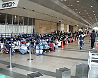
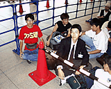
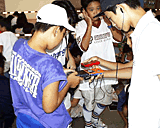

| 任天堂スペースワールド'99いよいよ開場！ |
|  ８月27日（金）から３日間にわたり、千葉県の幕張メッセにて開催される『NINTENDOスペースワールド'99』。会場予定時刻は午前９時なんだけど……午前８時にはすでに600人（開場時にはなんと2500人！）もの任天堂ファンが列を作っていたんです!! 平日で、しかも外はあいにくのどしゃぶりだというのに……みなさんの熱意に、ちょっと感激。 |
|  その列の先頭にいたのが、赤いＴシャツを着たカレ、群馬の布川寛クン。なんと布川クンは、'95〜'97年のスペースワールドでも、一番乗りを果たしていたという、一種の“ゆーめーじん”なんです。今年で４冠ってワケ。「２日連続で一番乗りを果たしたこともあったんですよ。今年も、最終日の日曜までがんばりたいなーとは思っています」とは布川クンの弁。カレが今回注目しているのは、ゲームボーイの『ゼルダの伝説 ふしぎな木の実 〜力の章〜』なんだとか。それにしてもいったい、カレがスペースワールド一番乗りにこだわる理由ってなんなんだろう？ 「やっぱり気持ちいい！ 特別な資格がなくてもとれる一番だってのもイイ。以前はほかのゲームイベントで一番を狙ったこともあったんですが、現在はスペースワールド一本です。次回も一番を狙いますよ」と語る布川クンでありました。 |
|  さて、列の構成は、布川クンのようなゲーム少年・少女が半分、小さなお子さん連れのファミリーが半分ってカンジ。みんな、ゲームボーイで遊びながら開場を待っていました。遊んでいるソフトはやっぱり『ポケットモンスター』かなと思ったら、「カードポン受付中です！」との元気な声が聞こえてきたゾ!? “カードポン”というのは、『ポケモンカードＧＢ』を遊んでるゲームボーイどうしで、カードを交換するモードのこと。声を出しながら列を歩いていたのは金井亮太クンで、カレはゲームイベントにくるたびに、お客さんにカードポンを呼びかけているんだとか。すぐにカレのまわりには、子供たちがわんさか集まってきたのでした。 |
| そうそう、列の最後尾につくときに、特製うちわがプレゼントされるんだけど、初日である金曜日だけは、ほかの２日間に配られるものと違う絵柄のものが渡されたのです。それは『ドンキーコング64』がデザインされた、緑のうちわ。午前６時に東京都八王子市を出発したという岡村夏美ちゃんも、大喜びでゲットしてましたヨ。
|